来源：https://ipn06t465m.feishu.cn/docx/R2uUdYVz3oqviKx4YADc7TC8nHh
总结下通过拆解，我自己的几点认知：
资料分比较多类，本次拆解大致分为2类进行体验
Q1：这些资料包到底从哪里来？是自己整理，还是去拼多多买？如何将这些资料二次整理，形成自己的特色？
Notion的使用门槛其实相对较高，而且官方已经提供一些基础的模版，所以Notion模版基本都需要自己创造。
要将Notion模版形成自己的特色，其重点在于将自己的专业知识、事项理解，体系化到模版中。
比如小红书搜索卖得最好的一个模版（忽略第一个引流的1元商品），其实是结合了大家日常记账需要的一个记账模版。
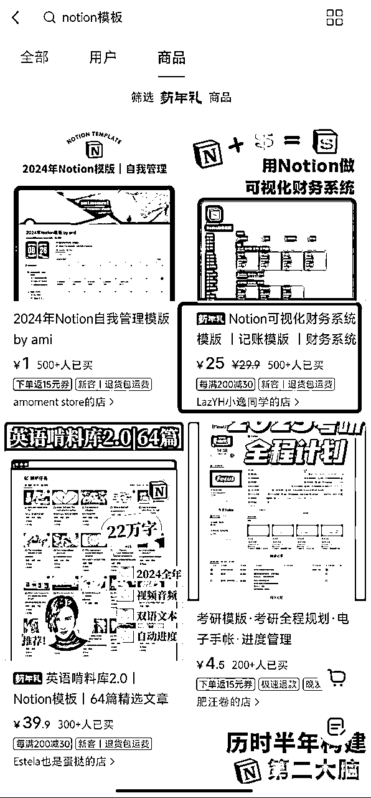
所以如何将这些资料二次整理，形成自己的特色？
这个问题，其实可以变成先研究自己的用户（粉丝），了解他们的需求，再针对需求形成解决此类需求的Notion模版方案。
比如卖得最好的第1个模版，博主其实是卖各类手账相关用品的。
而销量3、4的模版也都是各自目的非常明确，学英语、考研规划。
抓住对应的需求，形成对应的Notion模版，也就有了自己的特色。
Q2：有了资料以后，又该如何引流，是依托资料本身的优质内容，还是靠人设账号引流？
以小红书搜索【notion 模版】展现的第1篇笔记，来给大家分享下小红书上的引流方式。
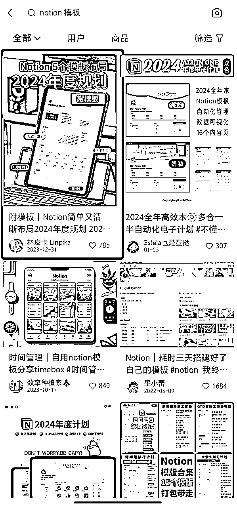
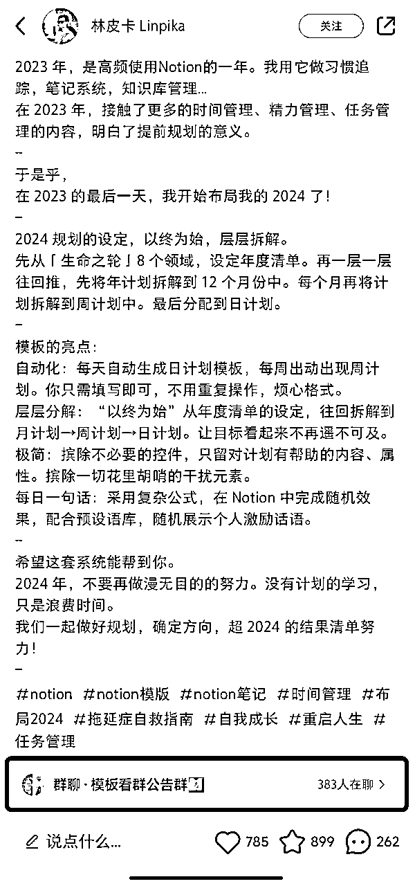
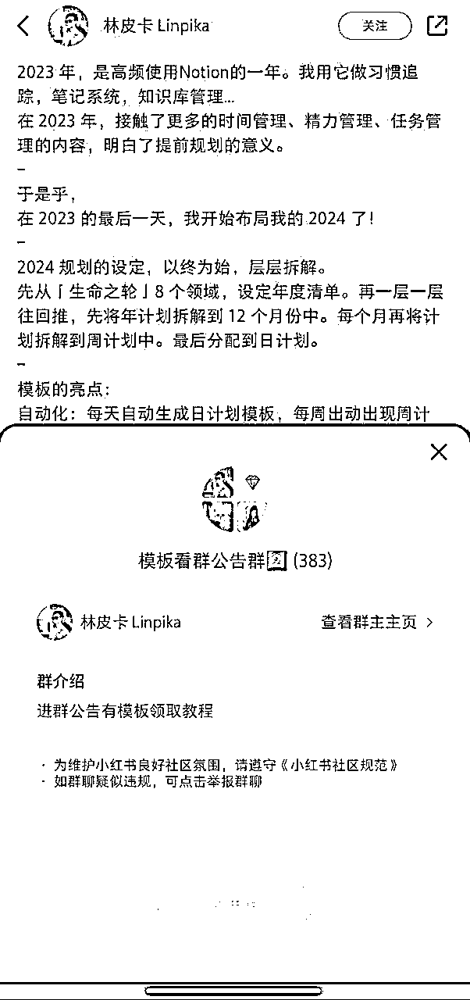
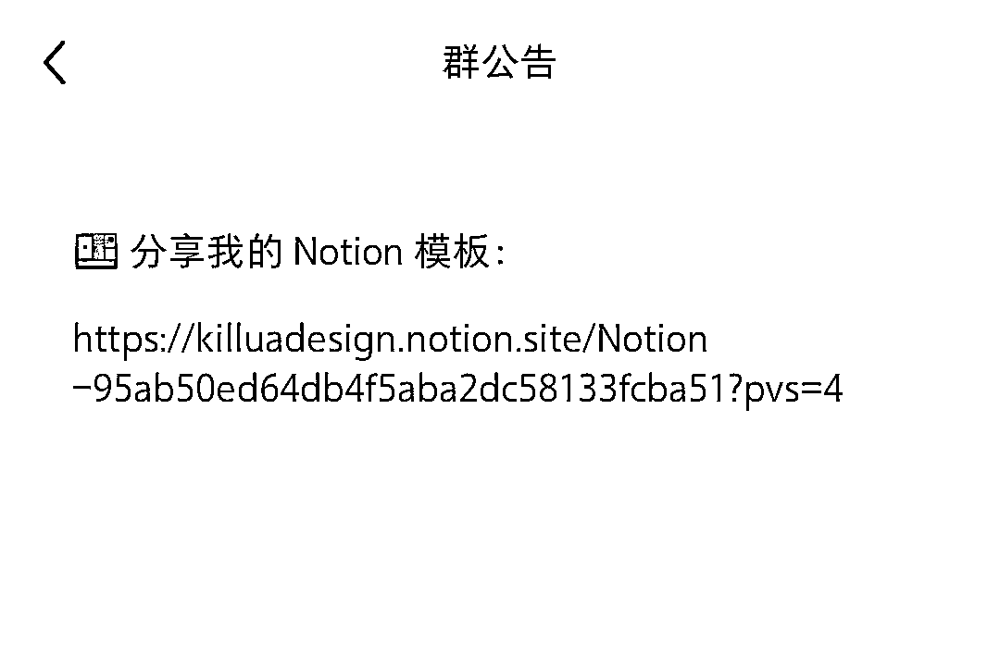
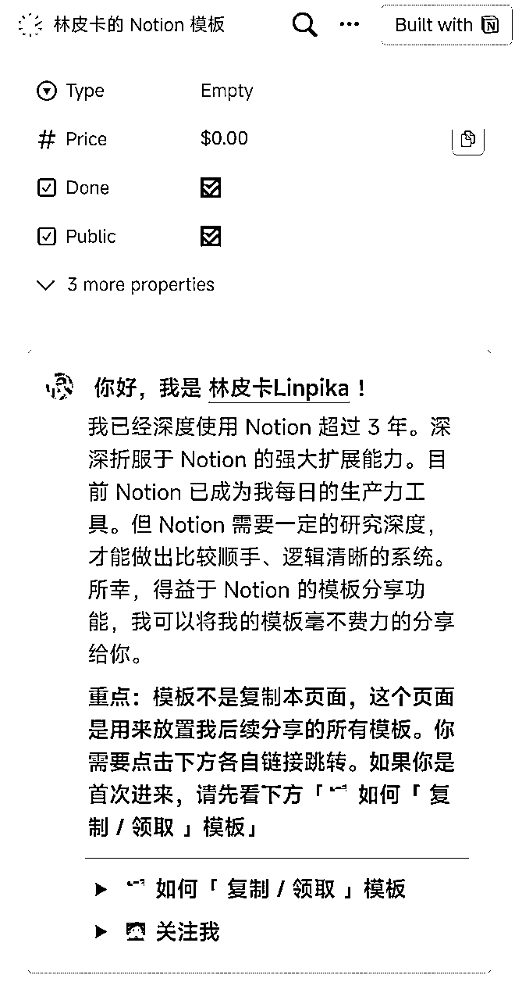
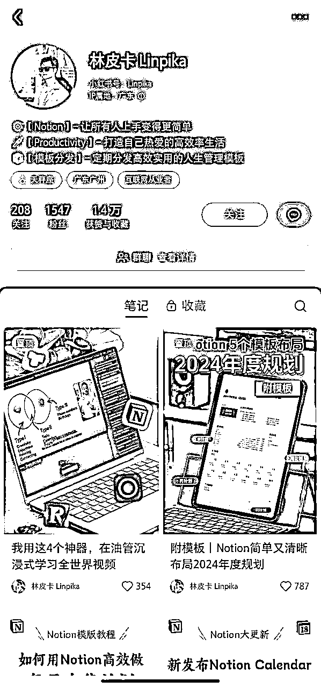
小红书发布笔记，关联群聊，群名直接引导用户加群领模版。
小红书群中通过群公告，将用户引流向自己的Notion个人网页，网页上介绍自己Notion使用3年，加深人设。
该博主目前的小红书账号，也是主打Notion的一个专业人设。
从目前观察来看，Notion模版的引流基本是靠资料本身的优质内容。
再靠资料本身的优质，来帮助塑造账号的人设。
一般Notion模版相关账号的人设都是热爱高效人生，人均规划大师、人生管理达人。
Q3：除了卖资料本身，还有什么变现方式？
Notion模版这门生意目前看有3种模式：
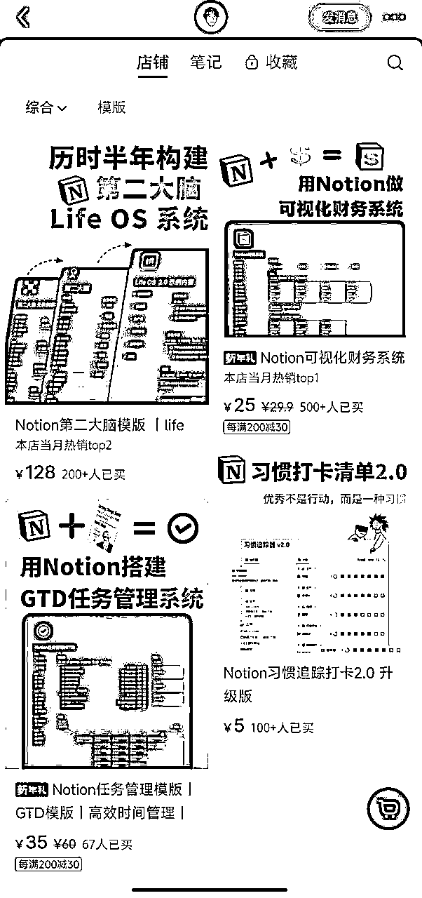
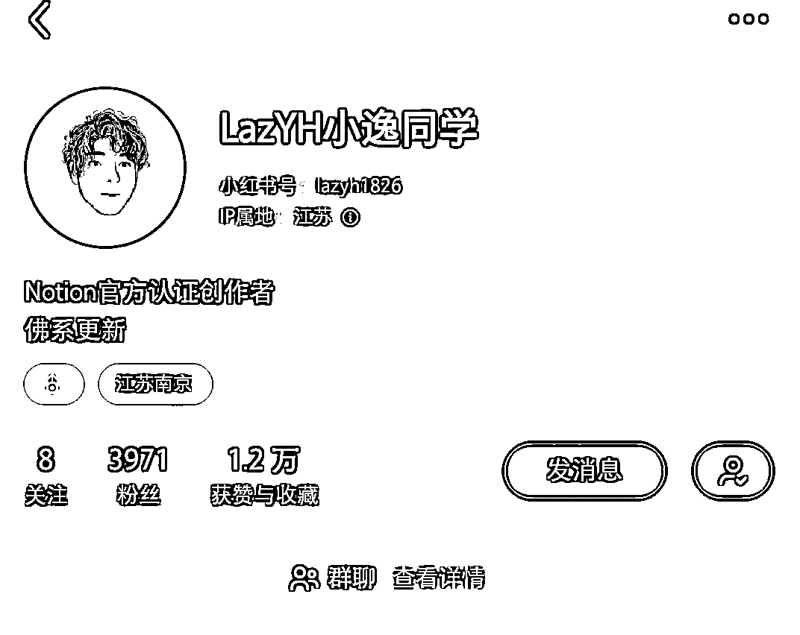
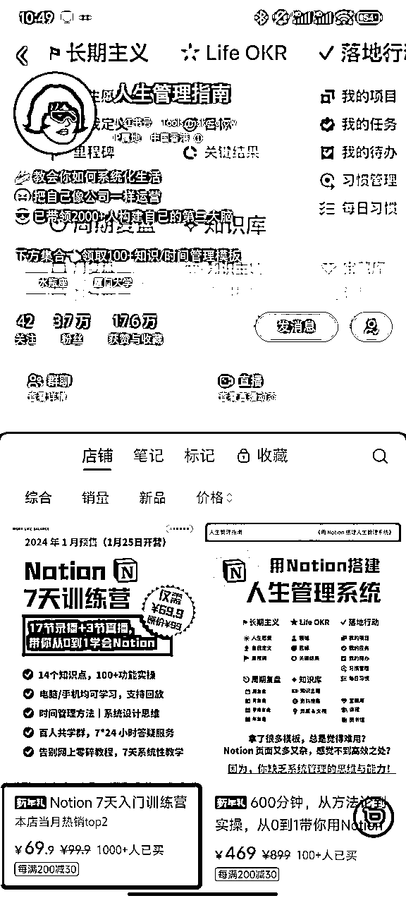
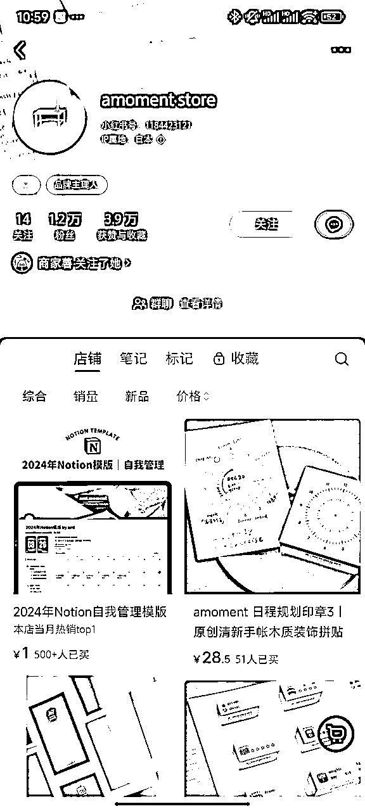
总结下3种变现方式：
雅思考试的资料已经都很成熟了，加几个送资料的号，基本就能收全。
小红书发帖，先散布出去自己手上有资料这个事情
然后具体领资料的方式不说，以此引导大家在评论区发布求资料的评论
这样这篇笔记就会曝光量很高，因为小红书的算法会给评论多的笔记增加流量
然后小红书私聊各个评论区发布了求资料的账号，告诉大家加微信领资料，来引流到微信
这里面还发现了一个偷其他人流量的方法，有A账号已经像上面那样引流了
B账号直接去A账号的评论区偷人，就在B账号的笔记下@ 对应评论区的人
因为对用户来说，都是领资料，加A领资料或加B领资料都是一样的，只要有资料，不会造成用户侧太多的反感。
然后对B账号来说，还发现一个更绝的是，它有可能还有佣金的变现模式在里面，也就是B账号其实是帮机构拉新，机构给B账号拉新的佣金。
从目前的接触来看，因为雅思资料真的网上都很多，所以大家一般是用资料来引流，不会直接卖资料收钱。
基本都是引导大家后续报课来实现其他的营收。
但是如果资料是有那种独特壁垒的，其实是可以通过卖资料获得可观收入的。
比如考研的专业课，每个学校的专业课基本是自主命题的，那么本校学生就能用自己收集到的历年真题或本校课程资源，打个信息差，赚取收益。
最后给自己打个广告，欢迎链接
【生财昵称】占占
【目前城市】北京
【个人介绍】
INFP-A｜体验派、实践派
人生是旷野，生命在于感知
永远喜欢可能性、多样性
非著名喝水人，也就是水篓子
现役云计算/音视频行业、B端产品🐶
副业音频后期，有一些零散收入
期望能拓展出更多的副业，一起搞钱
【提供资源】
1、音频后期技术
2、链接音频后期、音乐混音、歌手/配音、视频剪辑等相关专业团队
3、云计算相关产品咨询，如企业或个人网站上云
4、家里是做生意的，有家电、烟酒饮料、橱柜行业货源
【需求资源】
1、处于探索期，期望能从生财有术拓展自己的视野，多探索，找到自己喜欢并愿意深耕的副业
2、期望放大自己的副业收入，逐渐超过主业甚至支撑自己做自由职业
3、家是景德镇的，一直想帮景德镇的个人作坊、景漂学生做品牌，帮他们带货，同时推广瓷文化，但是现在还不知道从何入手
小红书 @混吃的爱学习
https://www.xiaohongshu.com/user/profile/56dd8de984edcd58d42ef524
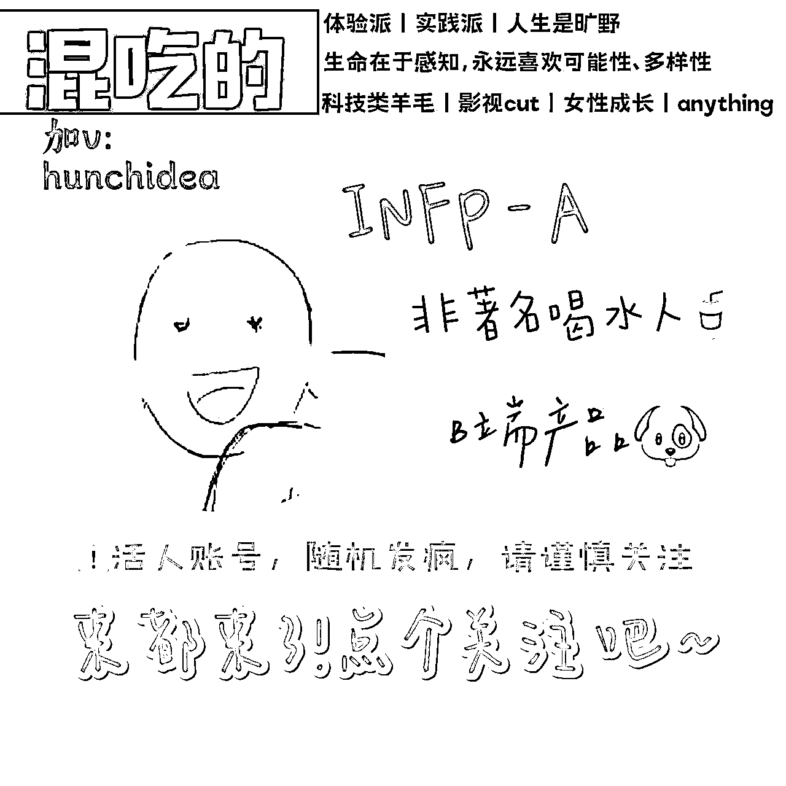